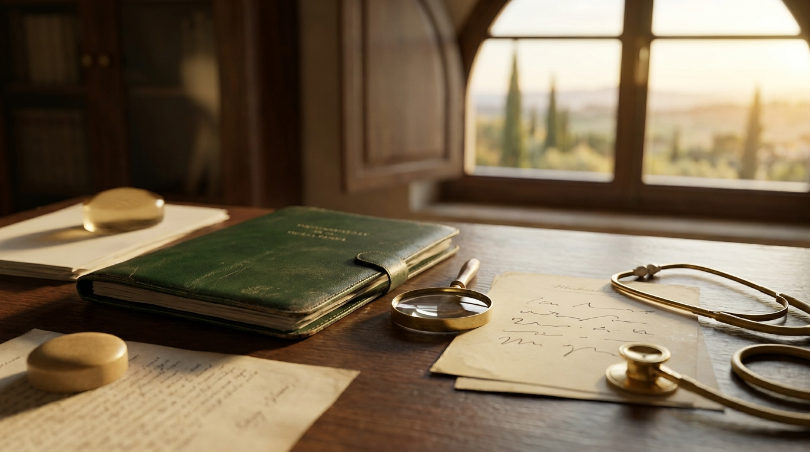

ATP e invalidità civile: il dissenso dalla CTU deve essere specifico
Una recente pronuncia del Tribunale di Napoli, Sezione lavoro, ribadisce un principio decisivo: per opporsi all'accertamento tecnico preventivo in materia di invalidità civile non basta dichiararsi in disaccordo con il consulente. Servono contestazioni specifiche e tecnicamente motivate. La decisione conferma la funzione selettiva del procedimento previsto dall'art. 445-bis c.p.c.

Il caso
Il Tribunale di Napoli si è pronunciato su una controversia in materia di invalidità civile avviata con accertamento tecnico preventivo (ATP), lo strumento previsto dall'art. 445-bis del codice di procedura civile per verificare in via anticipata le condizioni sanitarie del richiedente.
Il ricorrente, in disaccordo con le conclusioni del consulente tecnico d'ufficio (CTU) nominato dal giudice, aveva presentato opposizione. La contestazione, però, si limitava a un dissenso generico rispetto al giudizio medico-legale, senza individuare errori specifici nel percorso valutativo del consulente. Il Tribunale ha dichiarato inammissibile l'opposizione così formulata.
Inquadramento normativo
L'art. 445-bis c.p.c. disciplina un procedimento speciale per le controversie in materia di invalidità civile, cecità civile, sordità civile, handicap e disabilità. Il giudice dispone un accertamento tecnico sulla condizione sanitaria del soggetto prima dell'eventuale giudizio di merito.
Una volta depositata la relazione del CTU, le parti — il ricorrente e l'INPS — hanno un termine perentorio (trenta giorni) per dichiarare, con atto scritto, il proprio dissenso. La norma precisa che la dichiarazione deve contenere, a pena di inammissibilità, la specificazione dei motivi. È proprio su questo passaggio che si concentra la pronuncia napoletana.
In altri termini: il dissenso non è un semplice atto di volontà ("non sono d'accordo"), ma un atto a contenuto vincolato. Chi contesta deve indicare quali valutazioni del consulente ritiene errate e perché, sul piano medico-legale.
Perché conta: la funzione selettiva dell'ATP
Il procedimento dell'art. 445-bis nasce per deflazionare il contenzioso: filtrare le controversie già in sede di accertamento tecnico, così da evitare giudizi di merito superflui. Se la relazione del CTU non viene contestata in modo puntuale, il giudice omologa l'accertamento e la questione sanitaria si considera definita.
Un dissenso generico vanifica questa logica. Per questo il Tribunale lo equipara, di fatto, a una mancata contestazione: l'accertamento del CTU diventa il punto fermo del procedimento.
La conseguenza pratica è netta. Chi si limita a esprimere insoddisfazione, senza il supporto di un'analisi tecnica, perde la possibilità di rimettere in discussione la valutazione sanitaria. E questo vale tanto per il cittadino quanto per l'ente previdenziale.
Implicazioni pratiche per il ricorrente
Per chi richiede il riconoscimento dell'invalidità civile o dell'indennità di accompagnamento, la pronuncia ha un peso concreto.
La fase dell'ATP non è una formalità da attraversare. È il momento in cui si decide la sorte della pretesa. Una contestazione mal costruita — o costruita solo sul piano dell'insoddisfazione personale — chiude la strada al riconoscimento del diritto.
Il dissenso efficace presuppone un confronto tecnico con la relazione del CTU: occorre individuare le percentuali contestate, i quadri clinici trascurati, le metodologie di valutazione discutibili. È un lavoro che richiede, di regola, il supporto di un consulente medico-legale di parte.
Lo stesso principio tutela anche la posizione dell'INPS, tenuto agli stessi oneri di specificità quando intende opporsi a un accertamento favorevole al cittadino.
Cosa fare in concreto
- Leggere integralmente la relazione del CTU appena depositata, verificando diagnosi, percentuali riconosciute e criteri applicati.
- Far esaminare la consulenza a un medico-legale di fiducia, così da identificare eventuali errori tecnici prima di formalizzare il dissenso.
- Formulare contestazioni puntuali: indicare specificamente quali valutazioni si ritengono errate e su quali basi cliniche e normative.
- Rispettare rigorosamente il termine di trenta giorni dalla comunicazione: si tratta di un termine perentorio, la cui violazione comporta l'omologazione dell'accertamento.
- Conservare la documentazione sanitaria aggiornata a sostegno delle proprie tesi, già dalla fase dell'accertamento.
La lezione della pronuncia è chiara: nel procedimento ex art. 445-bis c.p.c. la qualità tecnica dell'opposizione conta quanto la sua tempestività. Affrontare la fase dell'ATP con superficialità significa rinunciare, di fatto, alla tutela del diritto.
---
*Contributo informativo a cura di Tamburro & Partners - Avv. Giuseppe Tamburro. Non costituisce parere legale.*
Ogni storia di lavoro ha i suoi tempi.
Se gestisci HR e vuoi un confronto su contenzioso, ispezioni o licenziamenti, scrivi allo studio. Ti rispondiamo entro un giorno lavorativo.